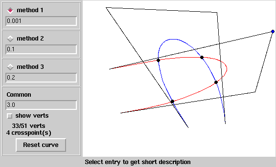

| Autor: | Wojciech Muła |
|---|---|
| Dodany: | 15.02.2007 |
Analitycznie jest to możliwe: jedną z krzywych wyraża się za pomocą funkcji uwikłanej f(x, y) = 0 (wykonalne), a funkcje tworzące drugą krzywą podstawia (wykonalne) i otrzymujemy wielomian 9. stopnia ze względu na parametr drugiej krzywej. Praktyczny problem to wyznaczenie pierwiastków wielomianu.
Dlatego o wiele prościej aproksymować dwie krzywe łamaną — krzywe są dzielone na coraz mniejsze łuki aż do chwili, gdy staną się dostatecznie „płaskie” (zobacz w osobnym artykule), a wtedy zastąpić je odcinkami i obliczyć przecięcia, co jest bardzo łatwe. Jeśli krzywe zostaną podzielone na dostatecznie krótkie łuki, można odczytać punkty przecięcia i wartości parametrów z praktycznie dowolną dokładnością.
Program:
Wymaga: